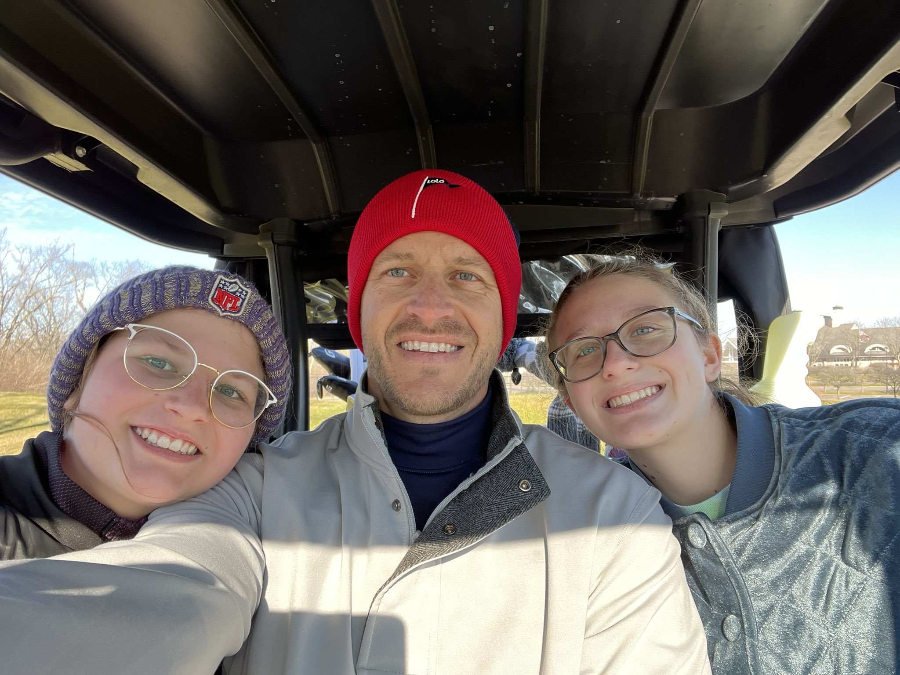

flowchart LR
subgraph ML[ML System]
direction TB
subgraph DataOps
end
subgraph ModelOps
end
subgraph DevOps
end
end
A[Stakeholders] --> ML
B[Business Requirements] --> ML
ML --> C[End Users]
DataOps --> ModelOps --> DevOps
Machine Learning
Designing ML Systems for Business
Brad Boehmke
Brad Boehmke
Phonetically: “Bem” + “Key”
Alternatives:
- Dr. / Professor B
- Brad
Contact:
- Read Communication Expectations Canvas page first!
- Email: boehmkbc@ucmail.uc.edu
- Office: Lindhall 3412



Course Overview
ML System Design
ML is all around us
ML System Design
And more and more organizations are finding use cases for ML.
https://bit.ly/3C4787p
ML System Design
But organizations are finding that…
- ML algorithms are the less problematic part.
- The hard part is to how to make algorithms work with other parts to solve real-world problems.
60/96 failures caused by non-ML components
https://www.youtube.com/watch?v=hBMHohkRgAA
ML System Design
Most ML courses & books focus on the algos
We’re going to focus on creating a system around the algos
This class is designed to get you thinking about the following questions…
- You’ve trained a model, now what?
- How do we measure if this model is improving the business?
- How do we manage the data feeding into this model?
- How do we track changes we make to this model?
- How do we deploy this model into production?
- How do monitor the health of this model?
- How do we manage the source code of an ML system?
- What human elements should we be concerned about with an ML system?
- …
Learning Objectives
- Understand what goes into an ML System and the value it provides for organizations.
- Describe the core components and key concepts of MLOps, including DataOps, ModelOps, and DevOps.
- Gain hands-on experience with tools and techniques for building and deploying machine learning systems.
Prereqs
This class is targeted towards:
- Graduate students - data scientists, engineers, and analytics professionals
- Individuals with a basic background in ML and software development
- Those interested in cross-functional collaboration between data science, engineering, and business teams
You don’t need to be a strong programmer but there is plenty of…
- code demonstrating implementation of MLOps concepts
- exercises/assignments that require hands-on work
So Python and ML familiarity will be very beneficial but not strictly required
Python primer: https://bradleyboehmke.github.io/uc-bana-6043
Course Structure
- Readings & Lectures: Theoretical foundations and practical insights.
- Quizzes: Reinforce important concepts.
- Hands-On Exercises: Apply concepts through real-world scenarios.
- Project Work: Collaborate on designing and deploying a machine learning system.
In-person Class Operations
- Tuesdays:
- Overview of that week’s readings & discussions.
- Try preview readings before class to help drive discussion.
- Thursdays:
- Engage in interactive exercises and case studies, or…
- Work with group on project work.
- Virtual:
- Complete reading quizzes.
- Contribute to group discussions/exercises.
- Course project group work.
Grading Breakdown
- Reading Quizzes: 20%
- Engagement: 20% (interactive exercises & discussion forums)
- Project: 60%
- Proposal (15%)
- Prototype (15%)
- Final demo & report (30%)
Course Project Details
- Objective: Design and deploy a machine learning system addressing a real-world business problem.
- Teams: Work in groups of 3-5 students to foster collaboration.
- Deliverables: Final report, presentation, and deployed model demonstration.
- Milestones: Regular checkpoints to ensure progress and provide feedback.
- Week 1: Review final project details
- Week 2: Project groups finalized
- Week 3: Spring break üèñÔ∏è
- Week 4: Project proposals due
- Week 6: Project MVP due
- Week 8: Project demo & report due
Further information and details listed in the Final Project Outline on Canvas .
What the Future Holds
| Week | Tue | Thu | Due EOW |
|---|---|---|---|
| 1 | Today üòÄ | No class | Exercise & Reading Quizzes |
| 2 | Discuss DataOps | Group Exercise | Exercise, Reading Quizzes, Project Groups Due |
| 3 | Spring Break üèñÔ∏è | ||
| 4 | ModelOps & Experiment Tracking | Work on Project Proposals | Reading Quizzes, Project Proposals Due |
| 5 | Model Versioning & Deployment | No class | Reading Quizzes |
| 6 | Model Deployment & Monitoring | Work on Project MVP | Reading Quizzes, Project MVP Due |
| 7 | DevOps | Work on Final Project | Reading Quizzes |
| 8 | Work on Final Projects | Final Projects Due | ü•≥ |
Questions and Discussion
- Open floor for any questions regarding the course structure, expectations, or content.
- Discussion on how this course aligns with your academic and career goals.
BANA 7075